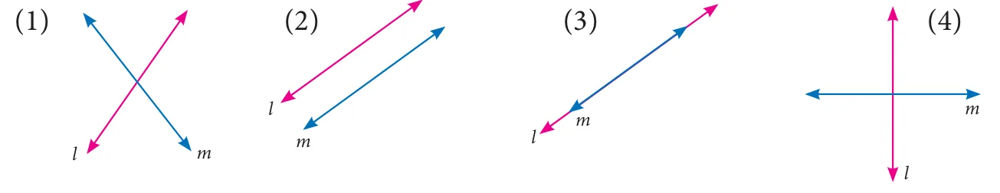

Multiple choice questions
- If \(x^{3} + 6x^{2} + kx + 6\) is exactly divisible by \((x + 2)\), then \(k = ?\)
(1) \(-6\) (2) \(-7\) (3) \(-8\) (4) \(11\) - The root of the polynomial equation \(2x + 3 = 0\) is
(1) \(\frac{1}{3}\) (2) \(-\frac{1}{3}\) (3) \(-\frac{3}{2}\) (4) \(-\frac{2}{3}\) - The type of the polynomial \(4 - 3x^{3}\) is
(1) constant polynomial (2) linear polynomial
(3) quadratic polynomial (4) cubic polynomial. - If \(x^{51} + 51\) is divided by \(x + 1\), then the remainder is
(1) \(0\) (2) \(1\) (3) \(49\) (4) \(50\) - The zero of the polynomial \(2x + 5\) is
(1) \(\frac{5}{2}\) (2) \(-\frac{5}{2}\) (3) \(\frac{2}{5}\) (4) \(-\frac{2}{5}\) - The sum of the polynomials \(p(x) = x^{3} - x^{2} - 2\), \(q(x) = x^{2} - 3x + 1\)
(1) \(x^{3} - 3x - 1\) (2) \(x^{3} + 2x^{2} - 1\) (3) \(x^{3} - 2x^{2} - 3x\) (4) \(x^{3} - 2x^{2} + 3x - 1\) - Degree of the polynomial \((y^{3} - 2)(y^{3} + 1)\) is
(1) \(9\) (2) \(2\) (3) \(3\) (4) \(6\) - Let the polynomials be
(A) \(-13q^{5} + 4q^{2} + 12q\) (B) \((x^{2} + 4)(x^{2} + 9)\)
(C) \(4q^{8} - q^{6} + q^{2}\) (D) \(-\frac{5}{7}y^{12} + y^{3} + y^{5}\)
Then ascending order of their degree is
(1) A,B,D,C (2) A,B,C,D (3) B,C,D,A (4) B,A,C,D - If \(p(a) = 0\) then \((x - a)\) is a \(\underline{\qquad\qquad}\) of \(p(x)\)
(1) divisor (2) quotient (3) remainder (4) factor - Zeros of \((2 - 3x)\) is \(\underline{\qquad\qquad}\)
(1) \(3\) (2) \(2\) (3) \(\frac{2}{3}\) (4) \(\frac{3}{2}\) - Which of the following has \(x - 1\) as a factor?
(1) \(2x - 1\) (2) \(3x - 3\) (3) \(4x - 3\) (4) \(3x - 4\) - If \(x - 3\) is a factor of \(p(x)\), then the remainder is
(1) \(3\) (2) \(-3\) (3) \(p(3)\) (4) \(p(-3)\) - \((x + y)(x^{2} - xy + y^{2})\) is equal to
(1) \((x + y)^{3}\) (2) \((x - y)^{3}\) (3) \(x^{3} + y^{3}\) (4) \(x^{3} - y^{3}\) - \((a + b - c)^{2}\) is equal to \(\underline{\qquad\qquad}\)
(1) \((a - b + c)^{2}\) (2) \((-a - b + c)^{2}\) (3) \((a + b + c)^{2}\) (4) \((a - b - c)^{2}\) - If \((x + 5)\) and \((x - 3)\) are the factors of \(ax^{2} + bx + c\), then values of a, b and c are
(1) \(1, 2, 3\) (2) \(1, 2, 15\) (3) \(1, 2, -15\) (4) \(1, -2, 15\) - Cubic polynomial may have maximum of \(\underline{\qquad\qquad}\) linear factors
(1) \(1\) (2) \(2\) (3) \(3\) (4) \(4\) - Degree of the constant polynomial is \(\underline{\qquad\qquad}\)
(1) \(3\) (2) \(2\) (3) \(1\) (4) \(0\) - Find the value of \(m\) from the equation \(2x + 3y = m\). If its one solution is \(x = 2\) and \(y = -2\).
(1) \(2\) (2) \(-2\) (3) \(10\) (4) \(0\) - Which of the following is a linear equation
(1) \(x + \frac{1}{x} = 2\) (2) \(x(x - 1) = 2\) (3) \(3x + 5 = \frac{2}{3}\) (4) \(x^{3} - x = 5\) - Which of the following is a solution of the equation \(2x - y = 6\)
(1) \((2, 4)\) (2) \((4, 2)\) (3) \((3, -1)\) (4) \((0, 6)\) - If \((2, 3)\) is a solution of linear equation \(2x + 3y = k\) then, the value of \(k\) is
(1) \(12\) (2) \(6\) (3) \(0\) (4) \(13\) - Which condition does not satisfy the linear equation \(ax + by + c = 0\)
(1) \(a \neq 0,\ b = 0\) (2) \(a = 0,\ b \neq 0\)
(3) \(a = 0,\ b = 0\) (4) \(a \neq 0,\ b \neq 0\) - Which of the following is not a linear equation in two variable
(1) \(ax + by + c = 0\) (2) \(0x + 0y + c = 0\)
(3) \(0x + by + c = 0\) (4) \(ax + 0y + c = 0\) - The value of \(k\) for which the pair of linear equations \(4x + 6y - 1 = 0\) and \(2x + ky - 7 = 0\) represents parallel lines is
(1) \(k = 3\) (2) \(k = 2\) (3) \(k = 4\) (4) \(k = -3\) - A pair of linear equations has no solution then the graphical representation is

- If \(\frac{a_{1}}{a_{2}} \neq \frac{b_{1}}{b_{2}}\) where \(a_{1}x + b_{1}y + c_{1} = 0\) and \(a_{2}x + b_{2}y + c_{2} = 0\) then the given pair of linear equation has \(\underline{\qquad\qquad}\) solution(s)
(1) no solution (2) two solutions (3) unique (4) infinite - If \(\frac{a_{1}}{a_{2}} = \frac{b_{1}}{b_{2}} \neq \frac{c_{1}}{c_{2}}\) where \(a_{1}x + b_{1}y + c_{1} = 0\) and \(a_{2}x + b_{2}y + c_{2} = 0\) then the given pair of linear equation has \(\underline{\qquad\qquad}\) solution(s)
(1) no solution (2) two solutions (3) infinite (4) unique - GCD of any two prime numbers is \(\underline{\qquad\qquad}\)
(1) \(-1\) (2) \(0\) (3) \(1\) (4) \(2\) - The GCD of \(x^{4} - y^{4}\) and \(x^{2} - y^{2}\) is
(1) \(x^{4} - y^{4}\) (2) \(x^{2} - y^{2}\) (3) \((x + y)^{2}\) (4) \((x + y)^{4}\)